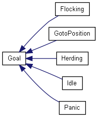
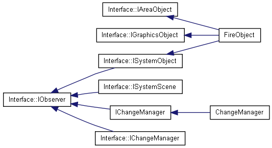
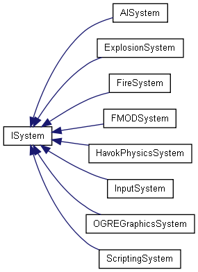
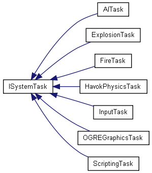
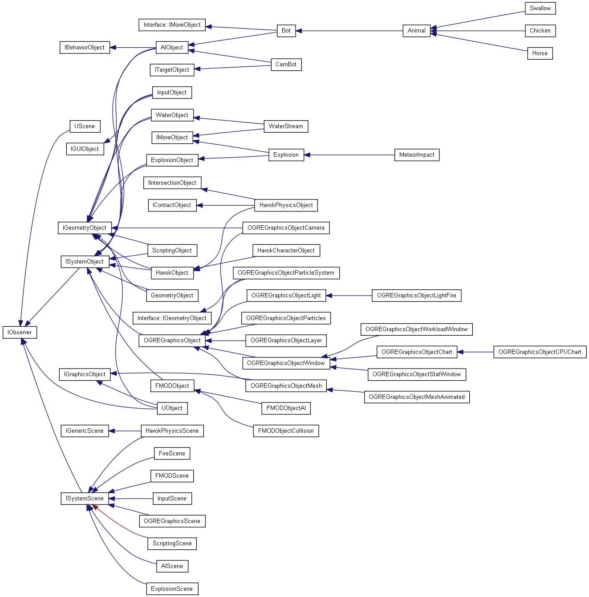
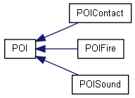
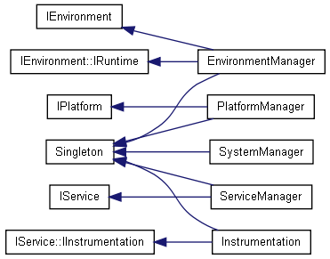

Main Page
Classes
Class List
Class Hierarchy
Class Members
Graphical Class Hierarchy
Go to the textual class hierarchy







Generated on Tue Oct 28 13:18:37 2008 for Smoke by
1.5.6


 1.5.6
1.5.6